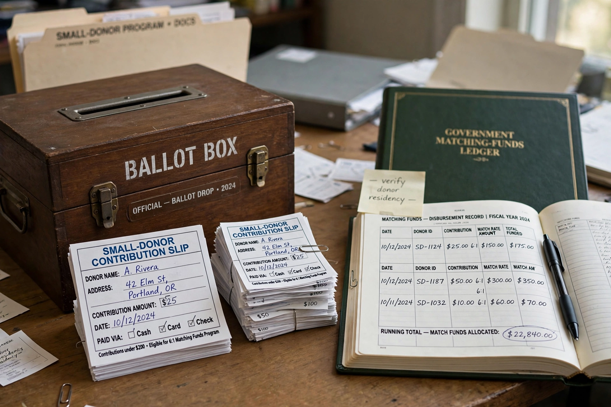

| Field | Public finance, political science |
|---|---|
| Context | Election campaign funding |
| Mechanisms | Matching funds, block grants, democracy vouchers, tax checkoffs |
| Goal | Reduce dependence on large private donors; broaden participation |

Public financing of elections (also called public funding or clean elections) refers to systems in which government funds are provided to candidates or political parties to pay for election campaigns, typically in exchange for accepting limits on private contributions and spending. Its stated aims are to reduce the influence of wealthy donors and special interests, lower barriers to running for office, and encourage candidates to seek broad, small-donor support.
At the federal level, public financing has applied to presidential elections since 1976, but major-party nominees have opted out of the general-election grant since 2008 as private fundraising outgrew the subsidy. Several states (including Arizona, Maine and Connecticut) and cities operate "clean elections" programmes for state and local offices. Constitutional challenges under the First Amendment have reshaped the field: the Supreme Court struck down Arizona's triggered matching-funds provision in Arizona Free Enterprise Club v. Bennett (2011), while upholding the basic constitutionality of voluntary public financing in Buckley v. Valeo (1976).
Many democracies provide routine state funding to political parties based on vote share or seats — common across Europe — often combined with free broadcast time and strict spending limits, a model distinct from the candidate-centred U.S. approach.